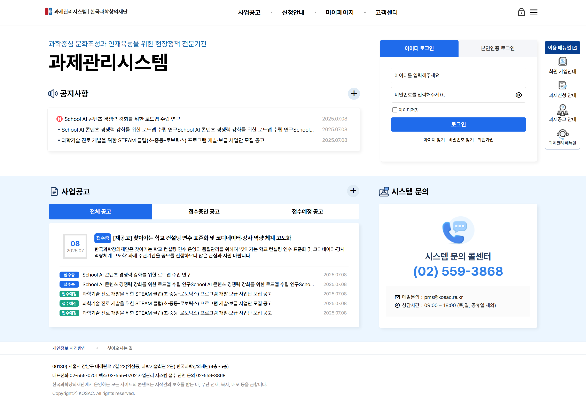

GENIE PLUS 리뉴얼
친환경 에너지를 상징하는 비주얼과 온라인 수요조사, 평가 시스템을 직관적인 UI 구조로 개편했습니다.
UI/UX DESIGNER & PUBLISHER
WEB DESIGN · UI/UX · PUBLISHING
이지수 1991.11.27(만34)
사용자 중심의 UI/UX 설계부터 웹 접근성 준수 및 반응형 웹 퍼블리싱까지 완벽히 수행합니다.
친환경 에너지를 상징하는 비주얼과 온라인 수요조사, 평가 시스템을 직관적인 UI 구조로 개편했습니다.

메인 대시보드 UI/UX 리뉴얼 및 기존 서브 시스템(통계, 정책, 플랫폼 등)의 표준화 유지보수를 통합 수행했습니다.

공모현황, 당선작 아카이빙을 한눈에 파악할 수 있는 대형 메인 비주얼 중심의 반응형 웹 시스템입니다.

KRDS 가이드라인을 완벽 준수하고, 공고 및 평가위원 신청 등 복잡한 기능을 단순화한 통합 관리 UI입니다.

사업공고, 접수, 원스톱 시스템 문의 카드 레이아웃 적용으로 높은 가독성과 사용성을 제공합니다.

통합 검색 상단 배치와 카테고리 직관화를 통해 데이터 탐색 동선을 최소화한 국가 데이터 플랫폼입니다.

로그인 영역과 대형 안내 배너, 공지사항 및 AI Advisor 퀵메뉴를 효율적으로 분할 배치했습니다.

공모 현황 D-day 카운트다운과 라이브 심사 중계 영역을 통해 공정성과 가독성을 한층 높였습니다.

라이브 심사 진행 알림 및 하단 당선작 아카이빙 카러셀을 통해 투명한 정보 전달 체계를 다졌습니다.

우주항공청의 첨단 이미지와 거버넌스 특성을 담아낸 미래지향적 비주얼 톤앤매너 및 시스템 UI/UX 설계안을 제시했습니다.
복잡한 보건의료 데이터와 응용 환경 통합을 위한 시각화 인포그래픽 중심의 구조적 제안서를 완성했습니다.

국가 연구개발 기획 및 지원 업무의 연속성과 가독성을 높이기 위한 사용자 친화적 UI 디자인 컨셉을 기획·정리했습니다.
공공기관 심사/평가 프로세스의 투명성과 신뢰성을 극대화하기 위한 전략적 인포그래픽 및 비주얼 제안서 파트를 제작했습니다.